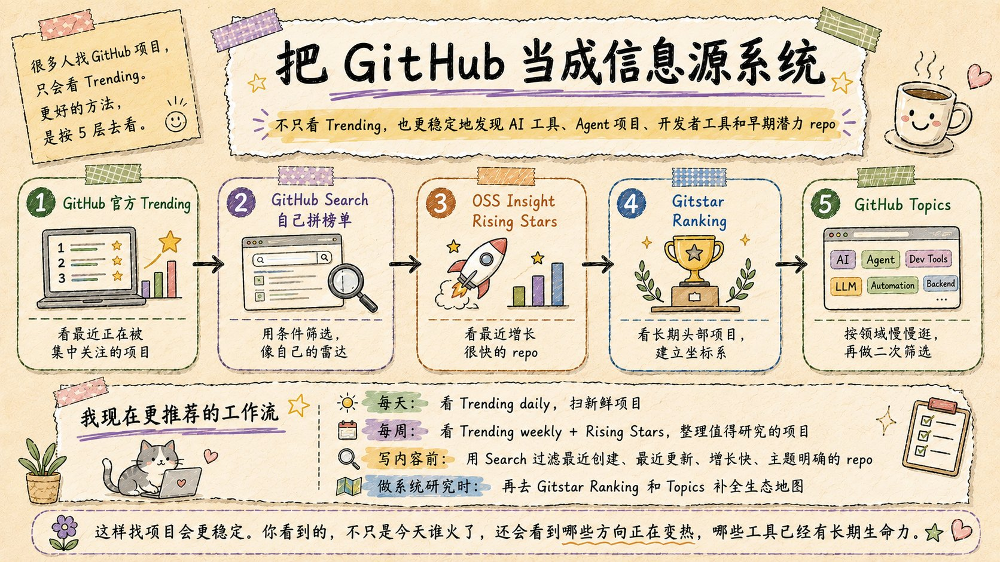
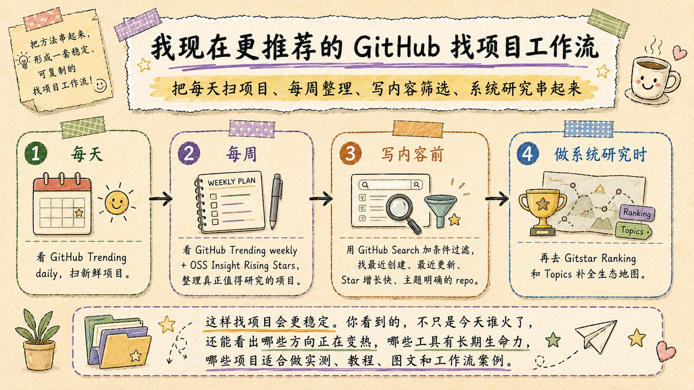
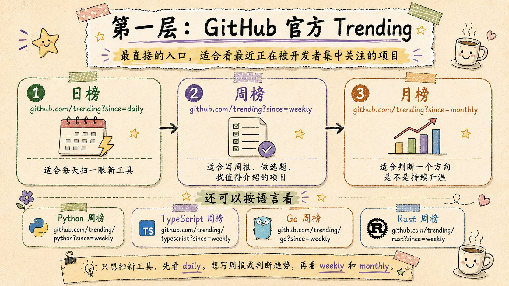
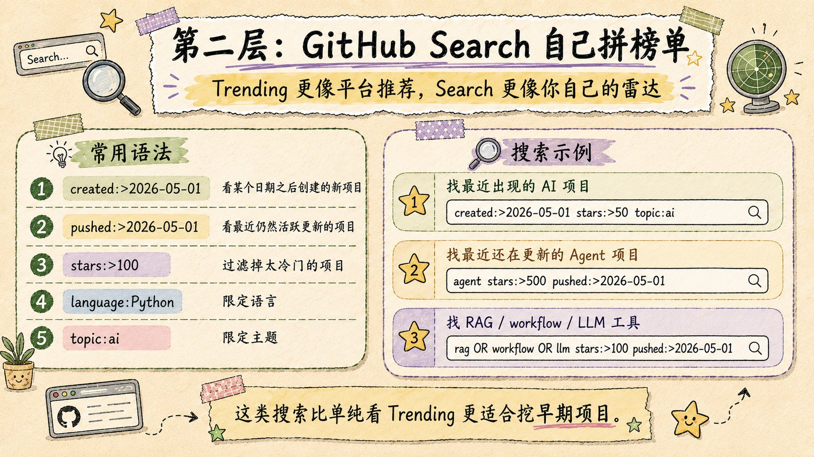
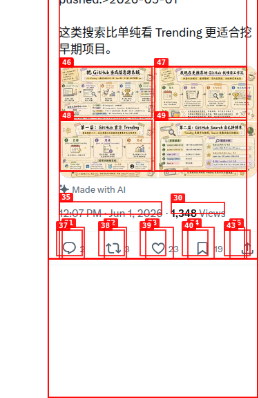

别只看 GitHub Trending：把 GitHub 当成信息源系统，Search 才是你的雷达
这条 X 帖把“找 GitHub 项目”拆成 4 张图：总览、工作流、Trending 层和 Search 层。公开互动数可见，回复入口也可见，但当前未登录环境下无法展开回复全文，所以卡片只保留公开可见的评论态势，不虚构评论内容。
01 / 一句话结论
这不是一张“榜单推荐”贴，而是一张GitHub 发现系统的做法图：Trending 负责扫新，Search 负责精筛，Workflow 负责复用，最终目标是把 GitHub 从“排行页”变成“信息源系统”。
作者实际上给了什么
- 第一层：GitHub 官方 Trending，先看日/周/月榜。
- 第二层：GitHub Search，自己拼榜单。
- 方法论：每天扫、每周沉淀、写内容前筛选、系统研究时补图谱。
这条帖的真正用途
它不是告诉你“哪个 repo 最火”，而是告诉你“怎么长期稳定地发现值得关注的 repo”。也就是说，它给的不是结果清单，而是一个可以反复执行的选题/发现流程。
Trending → Search → Workflow。
AI 工具、Agent、开发者工具、早期潜力 repo。
把 GitHub 变成你自己的雷达。
02 / 四张图分别在说什么




1 张总图 + 1 张工作流 + 2 张层级图。
先搭框架，再给操作法，最后给检索语法。
这是一套能直接抄的发现流程，不只是配图。
03 / 公开回复与互动态势
- 评论入口：存在，但被登录墙挡住。
- 传播姿态：收藏数和点赞数明显高于回复数，说明这条更像“方法卡 / 备忘卡”，而不是高争议辩论贴。
- 处理原则：只保留公开可见信息，不编造评论内容。
如果把它当内容卡看
这条帖的收藏价值高于讨论价值。它提供的是“以后怎么找项目”的方法，而不是一个必须争论的结论。
如果把它当信息卡看
它最有用的部分是：把 GitHub 的发现流程拆成可执行的层级，让“找项目”从随机刷榜变成可复用的检索任务。
04 / 直接可复用的搜索式
Trending 层
日榜：`github.com/trending?since=daily`
周榜：`github.com/trending?since=weekly`
月榜：`github.com/trending?since=monthly`
语言维度
Python / TypeScript / Go / Rust 的周榜适合按技术栈扫；如果你只想每天看看新工具，先看 daily。
Search 语法
`created:>YYYY-MM-DD` / `pushed:>YYYY-MM-DD` / `stars:>100` / `language:Python` / `topic:ai`。
组合查询
AI：`created:>2026-05-01 stars:>50 topic:ai`
Agent：`agent stars:>500 pushed:>2026-05-01`
RAG / workflow：`rag OR workflow OR llm stars:>100 pushed:>2026-05-01`
先扫新鲜，再做筛选，最后回到主题地图。
比单看 Trending 更容易挖到早期项目。
Trending 是平台推荐，Search 才是你的雷达。
05 / 证据截图

06 / 来源
GitHub、Trending、Search、信息源系统、发现流程。
不是 repo 清单，而是找项目方法论卡。
4 张图 + 回复态势 + 截图证据。